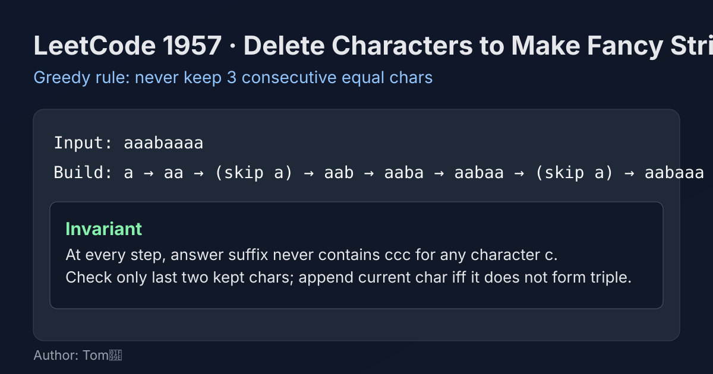

LeetCode 1957: Delete Characters to Make Fancy String (Greedy Run-Length Filter)
LeetCode 1957StringGreedyToday we solve LeetCode 1957 - Delete Characters to Make Fancy String.
Source: https://leetcode.com/problems/delete-characters-to-make-fancy-string/

English
Problem Summary
Given a string s, delete the minimum number of characters so that the resulting string contains no substring with three identical consecutive letters. Return any valid result with the minimum deletions.
Key Insight
Process characters from left to right and build the answer greedily. Keep a character unless it would make the last three characters equal. This local rule is globally optimal because every forbidden triple must delete at least one character, and skipping exactly the current violating character is always safe.
Algorithm
- Initialize an empty builder/list for the answer.
- For each character c in s:
• If answer length is at least 2 and last two characters are both c, skip c.
• Otherwise append c.
- Convert builder/list to string and return.
Complexity Analysis
Time: O(n), where n is the length of s.
Space: O(n) for the output buffer.
Common Pitfalls
- Checking counts over the full prefix instead of only last two kept chars (unnecessary overhead).
- Trying to delete earlier kept chars; not needed with left-to-right greedy.
- Forgetting short strings (n < 3) are always already valid.
Reference Implementations (Java / Go / C++ / Python / JavaScript)
class Solution {
public String makeFancyString(String s) {
StringBuilder sb = new StringBuilder();
for (int i = 0; i < s.length(); i++) {
char c = s.charAt(i);
int len = sb.length();
if (len >= 2 && sb.charAt(len - 1) == c && sb.charAt(len - 2) == c) {
continue;
}
sb.append(c);
}
return sb.toString();
}
}func makeFancyString(s string) string {
ans := make([]byte, 0, len(s))
for i := 0; i < len(s); i++ {
c := s[i]
n := len(ans)
if n >= 2 && ans[n-1] == c && ans[n-2] == c {
continue
}
ans = append(ans, c)
}
return string(ans)
}class Solution {
public:
string makeFancyString(string s) {
string ans;
ans.reserve(s.size());
for (char c : s) {
int n = (int)ans.size();
if (n >= 2 && ans[n - 1] == c && ans[n - 2] == c) {
continue;
}
ans.push_back(c);
}
return ans;
}
};class Solution:
def makeFancyString(self, s: str) -> str:
ans = []
for c in s:
if len(ans) >= 2 and ans[-1] == c and ans[-2] == c:
continue
ans.append(c)
return "".join(ans)var makeFancyString = function(s) {
const ans = [];
for (const c of s) {
const n = ans.length;
if (n >= 2 && ans[n - 1] === c && ans[n - 2] === c) {
continue;
}
ans.push(c);
}
return ans.join('');
};中文
题目概述
给定字符串 s，你需要删除尽可能少的字符，使得结果字符串中不存在任意“三个连续且相同字符”的子串。返回任意一个删除次数最少的合法结果。
核心思路
从左到右贪心构造答案。每次考虑当前字符 c：如果把它加入后会让末尾出现三个相同字符，就跳过；否则加入。这个局部决策是最优的，因为每个违规三连至少要删一个字符，而删当前这个导致违规的字符总是安全且不会增加未来代价。
算法步骤
- 准备一个可追加的结果容器（如 StringBuilder / 列表）。
- 遍历字符串每个字符 c：
• 若当前结果长度至少为 2，且最后两个字符都等于 c，则跳过 c。
• 否则把 c 追加到结果。
- 遍历结束后返回结果字符串。
复杂度分析
时间复杂度：O(n)，其中 n 为字符串长度。
空间复杂度：O(n)（输出缓冲区）。
常见陷阱
- 不需要统计整段连续次数，只要检查“结果末尾两位”即可。
- 不必回头删除之前已保留字符，顺序贪心足够。
- 忘记处理 n < 3 的情况（本来就合法）。
多语言参考实现（Java / Go / C++ / Python / JavaScript）
class Solution {
public String makeFancyString(String s) {
StringBuilder sb = new StringBuilder();
for (int i = 0; i < s.length(); i++) {
char c = s.charAt(i);
int len = sb.length();
if (len >= 2 && sb.charAt(len - 1) == c && sb.charAt(len - 2) == c) {
continue;
}
sb.append(c);
}
return sb.toString();
}
}func makeFancyString(s string) string {
ans := make([]byte, 0, len(s))
for i := 0; i < len(s); i++ {
c := s[i]
n := len(ans)
if n >= 2 && ans[n-1] == c && ans[n-2] == c {
continue
}
ans = append(ans, c)
}
return string(ans)
}class Solution {
public:
string makeFancyString(string s) {
string ans;
ans.reserve(s.size());
for (char c : s) {
int n = (int)ans.size();
if (n >= 2 && ans[n - 1] == c && ans[n - 2] == c) {
continue;
}
ans.push_back(c);
}
return ans;
}
};class Solution:
def makeFancyString(self, s: str) -> str:
ans = []
for c in s:
if len(ans) >= 2 and ans[-1] == c and ans[-2] == c:
continue
ans.append(c)
return "".join(ans)var makeFancyString = function(s) {
const ans = [];
for (const c of s) {
const n = ans.length;
if (n >= 2 && ans[n - 1] === c && ans[n - 2] === c) {
continue;
}
ans.push(c);
}
return ans.join('');
};
Comments